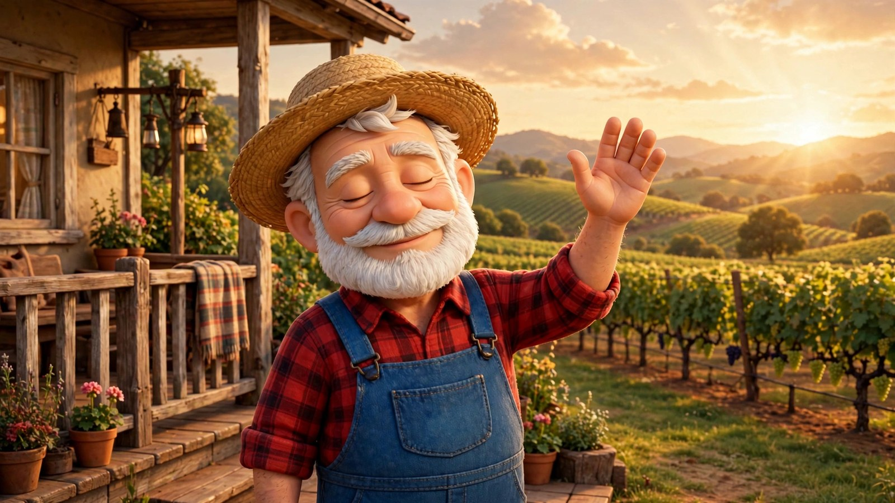

The Gospel of Mark — Chapter 1
The whole of Mark chapter 1, read word-for-word from the World English Bible and told as an animated film — Grandpa Teddy narrates.

TruVINE
Jesus is in this work, and He has full authority over it. Everything hung here was prayed over first and built second.

Every farmhouse has a front porch — the place where the family gathers, where news is shared, and where anything worth showing the neighbors gets hung up for all to see. This is ours. The public rundown lives on the porch: everything this family makes for the public — the wall, the cast, the reports, the reading — hangs here in one place, framed on the rail. If it isn’t public, it isn’t hung here. Pull up a chair.
The newest film from the studio, hung up front where every visitor can find it.
The whole of Mark chapter 1, read word-for-word from the World English Bible and told as an animated film — Grandpa Teddy narrates.
Six frames, hung in the open. Each one is a door into a room of the house — take them in any order you like.
The roll of the family — add your name, your photo, your prayer.
The public rundown: the cast of the Gospel films, and how we build.
The garden report: what the Lord is growing, in plain numbers.
Read and hear the whole Bible, in Grandpa Teddy’s voice.
The stand at the gate: the family’s goods.
The films and Shorts themselves.
Everything hung here is for the family of God — come and see.